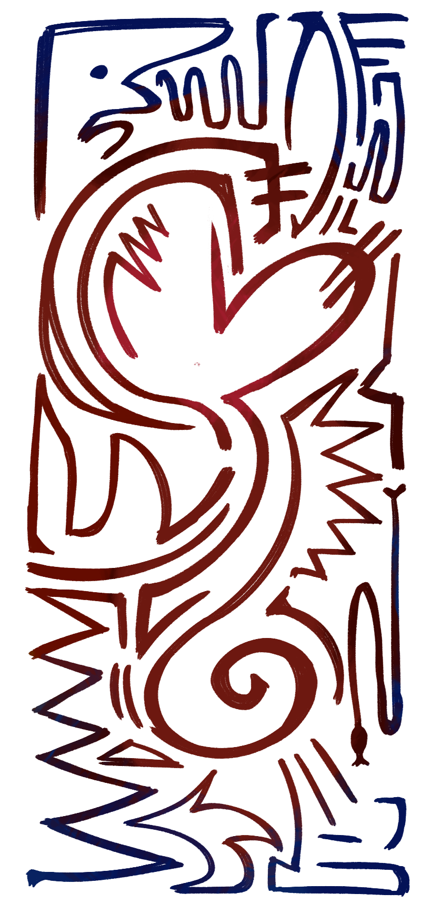

Guiding Light: to be outgoing, vigorous, and confident in the face of the unknown. you take others under your wing and guide them through the uncertainties of the present through your kindness alone. you both encourage and inspire. those with this character trait never fail to make others laugh more than they ever had before.

thank you for being my guiding light, nick.
i've never been good at anything social. growing up, i was always the kid who shrunk in fear at the thought of talking to other people, let alone strangers. i thought my university life would look scarily similar to much of my high school life: alone. and maybe it would have been like that, but you didn't let that happen.
you, intentionally or not, pulled me out of a deep spiral i had carved for myself for many years so easily. it wasn't anything specific either: you were simply kind to me. you always looked out for me, did everything in your power to make me feel included, and uplifted me. you introduced me to a reality that i thought was only possible in my dreams, and made me realize that it wasn't so impossible.
today, i don't find myself feeling so restricted by that crushing social anxiety. because it was from you that i learned that people aren't as scary as i thought: in fact, some can be so unbelievable kind and sweet. some inspire me to create me and to put myself out there. others inspire me to speak with a louder voice, and be myself more. you are all of those things to me, nick. so, thank you for everything.
just like how you were always there for me, i will always be here for you too. life can sometimes be difficult, but it doesn't have to be alone (having met you, i know that for certain). if you need anything at all, i'll be here!
thank you so much for all of this, nick. i will cherish the moments i have with you forever. happy thanksgiving!
love, stephen